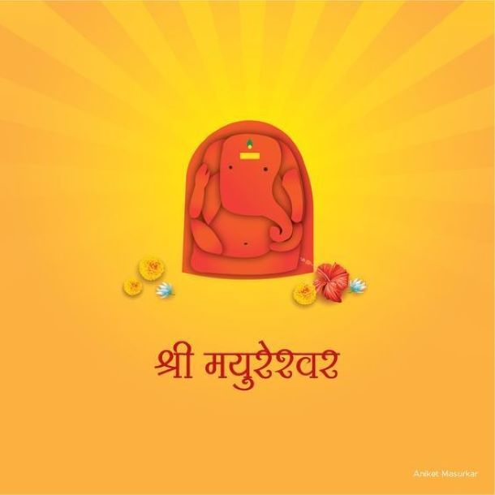
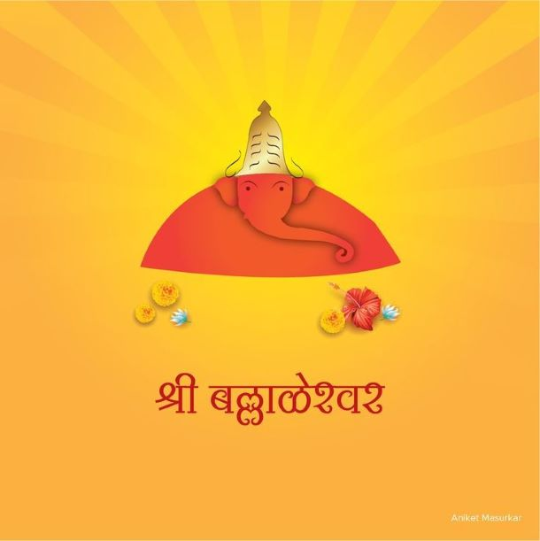
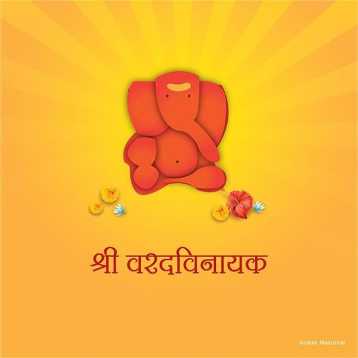
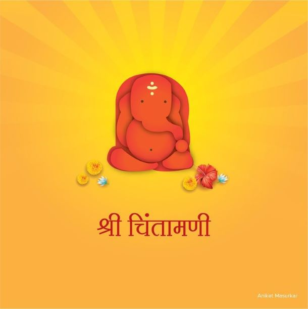
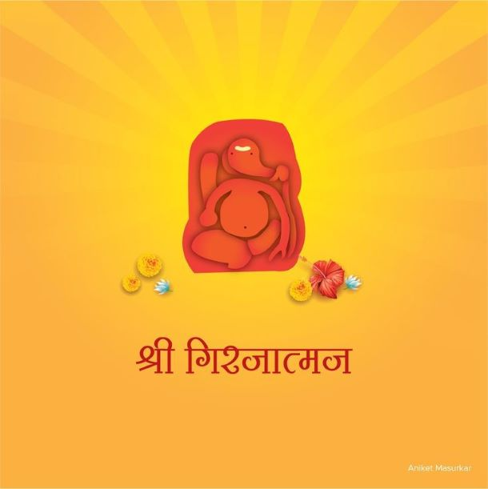

Bhagwan Ganpati, or Ganesha, is one of the most worshipped deities in India. The state of Maharashtra is renowned for its sacred Ashtavinayak temples, which hold special significance for devotees. The term "Ashtavinayak" is derived from Sanskrit, meaning "Eight Ganeshas." These eight temples are located in different areas, and all of them are considered Swayambhu, or self-originated. These deities are described as Jagrut, meaning they fulfill the wishes of their devotees. The Ashtavinayaka Yatra is a pilgrimage covering these eight holy abodes of Ganesha, primarily situated in and around Pune and Raigad districts of Maharashtra. Among the eight temples, five are in Pune, two in Raigad, and one in Ahmednagar (Ahilya Nagar) district. Ganesha is worshipped first before any other deity in Hindu rituals. The pilgrimage typically takes three days to complete, beginning at the Morgaon temple and covering the following sequence:
- Mayureshwar (Morgaon)
- Siddhivinayak (Siddhatek)
- Ballaleshwar (Pali)
- Varadavinayak (Mahad)
- Chintamani (Theur)
- Girijatmaj (Lenyadri)
- Vighneshwar (Ozar)
- Mahaganapati (Ranjangaon)
The Eight Ganeshas
1. Mayureshwar

Location: Morgaon, Pune District This temple is the most significant among the Ashtavinayak pilgrimage sites. Built from black stone during the Bahamani reign, it features four gates and is designed to resemble a mosque to prevent attacks during the Mughal period. The temple is surrounded by a 50-foot wall, with a unique Nandi (Shiva's bull) situated at its entrance. The murti of Ganesha, riding a peacock, is believed to have vanquished the demon Sindhu at this spot. The idol has its trunk turned to the left and is protected by a cobra. It is said to have been consecrated twice by Brahma.
2. Siddhivinayak
Location: Siddhatek, Ahmednagar District According to local legend, Vishnu vanquished the asuras Madhu and Kaitabha after worshipping Ganesha here. This temple is unique as it features the only murti among the eight with a trunk turned to the right. The temple faces north and was constructed by Punyashloka Ahilyabai Holkar.
3. Ballaleshwar

Location: Pali, Raigad District This temple is dedicated to a boy-devotee named Ballala, who was saved by Ganesha from local villagers. Originally a wooden temple, it was reconstructed in stone by Nana Phadanavis in 1760. The temple features exquisite carvings and is known for its unique prasad of Besan Laddu instead of the usual Modak.
4. Varadvinayak

Location: Mahad, Raigad District The idol at Varadavinayak is said to have been discovered in a lake and dates back to 1690 AD. The temple is known for its beautiful dome and a continuous oil lamp that has been burning since 1892. Devotees can personally pay homage to the idol.
5. Chintamani

Location: Theur, Pune District This temple is associated with Parvati's penance to beget Ganesha. Carved out of a single stone hill, it features an expansive hall and requires worship from the rear. The temple is known for its natural lighting, relying solely on sunlight during the day.
6. Girijatmaj

Location: Lenyadri, Pune District Situated within a complex of Buddhist caves, this temple requires climbing 307 steps. The idol of Ganesha is worshipped from the rear of the temple and has a unique appearance compared to the other idols.
7. Vighneshwar
Location: Ozar, Pune District This temple is associated with the story of the demon Vighnasur. Ganesha defeated him and was subsequently honored with the title Vighneshwar. The temple is fortified by high walls and features a beautifully adorned inner sanctum.
8. Mahaganapati
Location: Ranjangaon, Pune District Believed to be built by Shiva before battling the demon Tripurasura, this temple features an idol that faces east and is said to be connected to a hidden idol with ten trunks and twenty hands. The temple architecture reflects the styles of the 9th and 10th centuries.